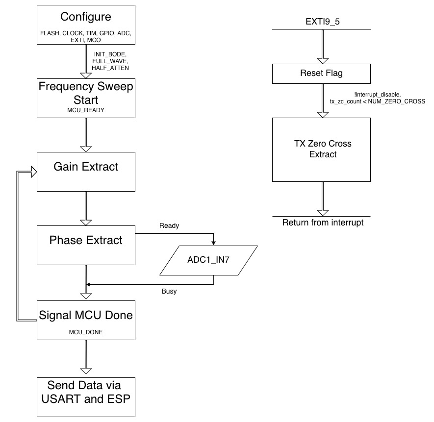

MCU
Introduction
The primary MCU function is for reading in the data from the DUT and the communication system and processing and plotting the data on the ESP8266 webserver in a bode plot form with gain [dB] and phase [degrees]. To perform the DAQ over a range of frequencies the MCU and FPGA communicate over a set of digital pins performing simple active high handshakes to move along a system FSM. The analog data is read off of an ADC pin continuously polling values at 12 bits of resolution every 24.5 clock cycles.
Design Methodology

Figure 1 displays the sequence of operations on a given MCU reset or bode plot DAQ protocol and display. First a configuration sequence is run, enabling necessary peripherals, GPIO pins, clock, and and flash. For this project we chose to run the PLL through the SYSCLK at 80MHz to achieve optimal instruction execution time as we had a few key timing aspects of this project.
The GPIO pins fall into two main categories; input and output pins for the communication link between the MCU and FPGA and the ADC analog input. The input pin function and detailed outline can be found in the System section. The pinouts for the MCU pins can be found in Figure 2 below.
| MCU | Label |
|---|---|
| PA8 | MCO (clk) |
| PA11 | FULL_WAVE |
| PA12 | MCU_READY |
| PB5 | SWEEP_DONE |
| PB4 | HALF_WAVE |
| PB6 | INIT_BODE |
| PA6 | ZERO_CROSS |
| PA0 | MCU_DONE |
| PA2 | GPIO_ADC |
| PB3 | GPIO_LED (Debugging) |
All pins except PA2 and PB3 fall into the communication link category of pins. The MCU drives the FPGA at a reduced clock rate of 10MHz through the MCO pin which is the largest possible frequency that our bread board wiring could support without coupling and degradation of the wave.
MCU_READY and MCU_DONE were GPIO outputs that told the FPGA that the MCU had either finished initialization or finished the ADC conversions and extraction of phase and gain. ZERO_CROSS was an active high flag used to send RX zero crossing timings from the FPGA to the MCU. INIT_BODE, SWEEP_DONE, FULLWAVE, and HALF WAVE are used for initialization and starting and stopping the frequency sweep. GPIO_ADC operates depending on the state of the other pins and polls data from the ADC peripheral at a high rate.
The new MCU feature that we used for this project was the ADC peripheral on the STM32L432KC. While the E155 labs covered peripherals such as timers and SPI we did not talk about or work with the ADC peripheral. This peripheral allows special function GPIO pins to be routed to the inputs of the ADC and convert analog voltages to digital bits. We chose to implement the peripheral in single conversion mode that, when toggled, could sample the incoming sine wave at a high enough frequency as to abide by the Nyquist Theorem.
\[ 2*fmax < fs \]
We determined experimentally that our sampling rate was roughly 900kHz by inputting a square wave with a function generator with a known frequency and duty cycle. Then by counting the samples between periods, a relatively accurate estimate of the sample rate was obtained. Given that our max carrier frequency was 100kHz we were sampling at a high enough frequency to properly extract gain and phase.
This design uses the ADC peripheral in order to convert analog signals comming from our DUT into digital signals.
Data Acquisition and Calculation
The data collection sequence was split into two sections, one for each of the types of data that we were collecting; gain and phase.
Gain Extraction and ADC Polling
First, the ADC peripheral was polled for a predetermined number of samples. It was important that we had enough samples to meet our lowest carrier frequency of 100 hz. Given our sample rate of 900 MHz and the period of the wave being 10ms we would be able to sample on average 1.11 periods of the signal. This was sufficient to see two peaks and at least one falling edge zero crossing therefore effectively extracting the necessary data. Once the amplitude data was stored and extracted, we converted it immediately to gain so we could re-use the allocated memory on the next iteration of the frequency spectrum. We hard coded the input amplitude value based on a manual calibration during development.
Phase Extraction and Interrupts
The phase extraction process was similar but had more detailed DAQ parameters due to the need to track timing differences between events. In order to extract the phase TX and RX falling edge zero crossings were detected and compared in time. To track time we had a simple general purpose timer free running, when a falling edge was detected at either TX or RX the counter value was sampled.
The FPGA sent TX zero crossing flags at every rising edge however, the signal was inverted through a necessary inverting op amp with a gain <1 meaning the zero crossing would land on Rising edges. To detect these we implemented a GPIO EXTI interrupt that would trip and sample the timer counter value. To detect RX zero crossings we implemented a simple analog watchdog algorithm to watch the continuously polling ADC for a threshold value. Once a specified number of zero crossings had been detected, the interrupt was disabled and the phase difference between the zero crossings was calculated.
We ran into many issues with this section as we could never sample the same zero crossing due to the interrupt handler’s run time crowding the RX zero crossing at high frequencies. Our algorithm instead continuously wrapped the phase to be in the 180 to -180 range accounting for the zero crossings existing on different periods of the carrier wave. It was determined experimentally that the optimal number of zero crossings to sample was 2. Any more and the 100Hz signal would trigger on the overflow of the counter value and the time difference would be difficult to extract.
Data Visualization
Once the gain and phase data had been acquired and converted to the correct units we converted them to strings using the sprintf function so they could be sent over a USART link to an ESP8266 wifi module. To plot the data itself we used the canvas API in HTML. This allowed us to create a log plotting function that would take the data and known frequency table and plot them on a log scale.